Miaren under saddle I've sat on Miaren a number
of times, and
been led around. So, I figured
he could start
some more serious training.
Chrissie is taking
him on for a month of more
consistent work.
When I can get out there,
we work on the riding part.
This is her second time
up on him and so far he
hasn't put a foot wrong.
He's so much more athletic
than the Haflingers, so
we're going slower. Miaren's
responses have been almost
identical to Niles' responses,
so we're very pleased with
how he's doing.
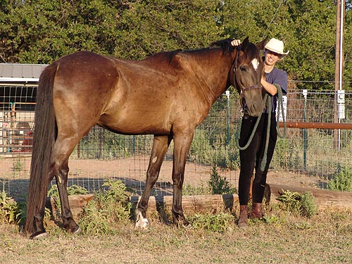
He's definitely turning
into a horse. He's between 15.2 and 15.3. No clue yet what he'll end up
at.
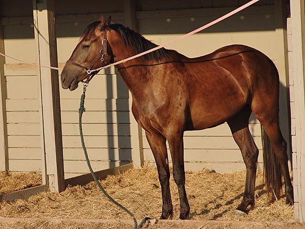
Learning about cross
ties, and not that happy.
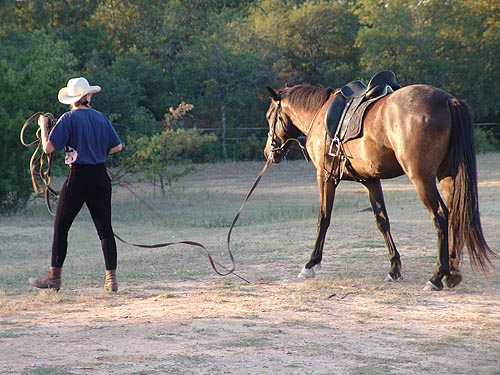
Heading to the shade
to lunge.
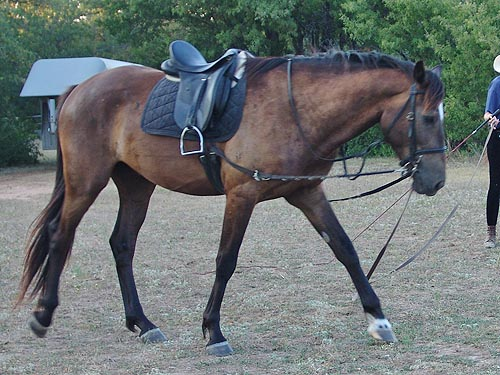
He strides out nicely
at the walk.
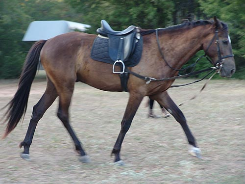
The side reins help
a lot. He tends toward hollow without them.
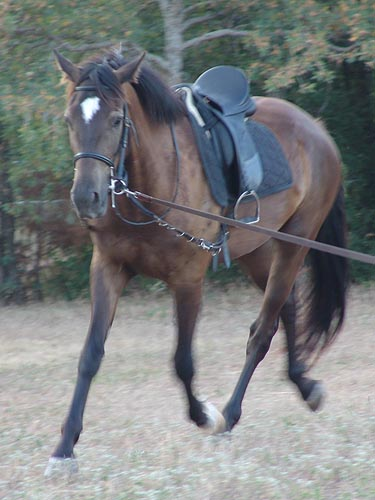
He's very consistent
on the lunge now.
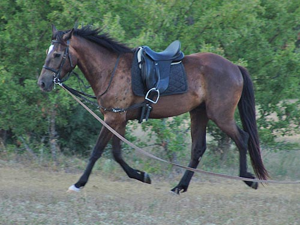
I don't plan to hunt
him this season, but hopefully by next year he'll be ready to go out with
the slow group. I'm hoping that we can work together and I can bring him
along. I'm not too sure yet, with him being a TB cross.
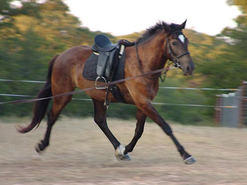
Moving on at the trot.
Not stretching over his topline, but definitely reaching from behind.
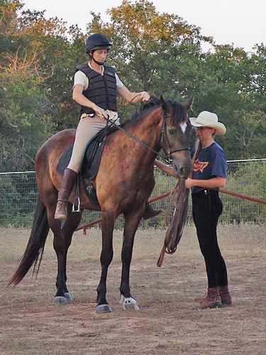
Mounting up and getting
settled. Miaren hasn't gotten to the point yet where he'd think about walking
off before being asked to move.
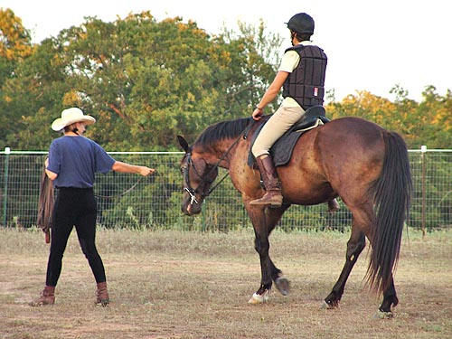
Chewing and pulling
against the bit like Niles.
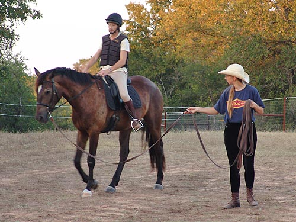
He paid attention to
Chrissie. To the left was easier, but he didn't always walk off when she
asked.
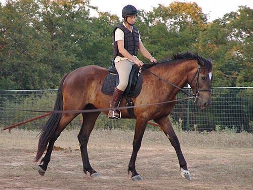
Out on the line going
to the right. On the ground I tried not to have too much influence. Sometimes
it was necessary for me to encourage him to walk on.
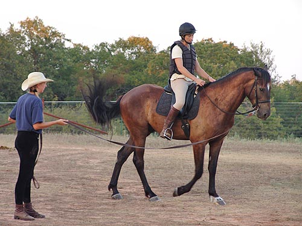
Here Miaren is explaining
to us that he's not that happy about going forward.
This was the worst that
he did. Chrissie responded with more leg and told him to get over it.
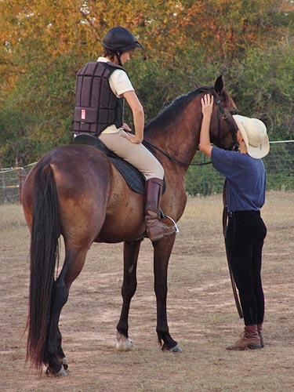
A break and some praise.
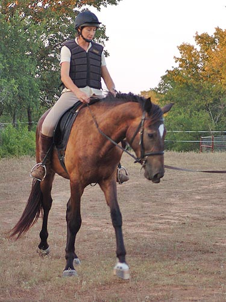
For now we kept him
on the line, but Chrissie gave him the directions.
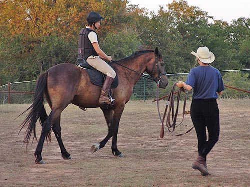
We'll be cautious for
the first 10 rides or so. He's been very obedient, but we want him to be
comfortable with it all.
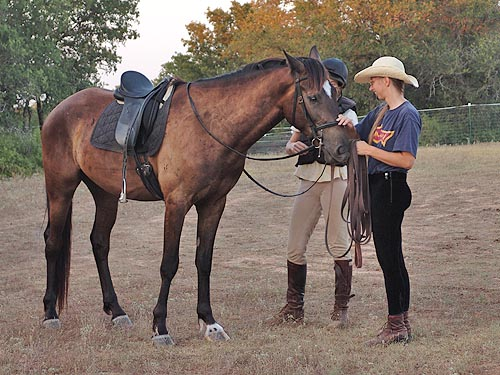
No problems with mounting
and dismounting.
He's brave, and trusts that
we won't do anything to hurt him.